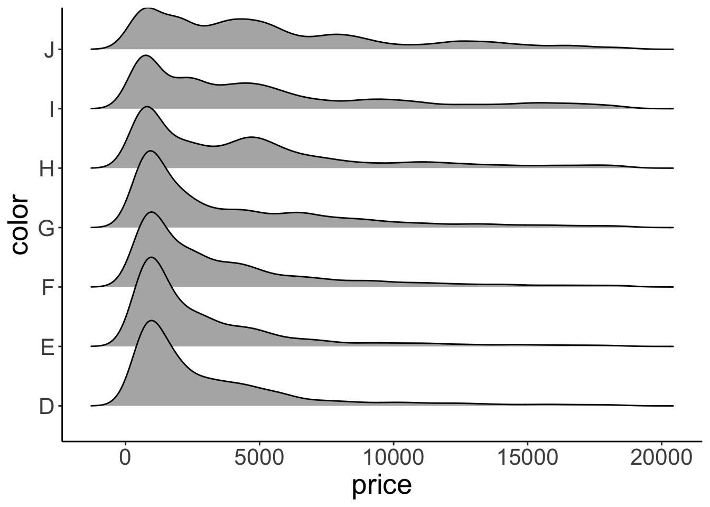
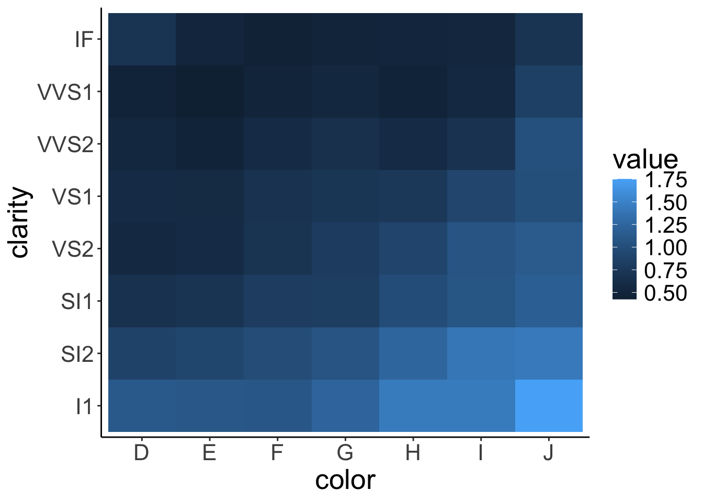
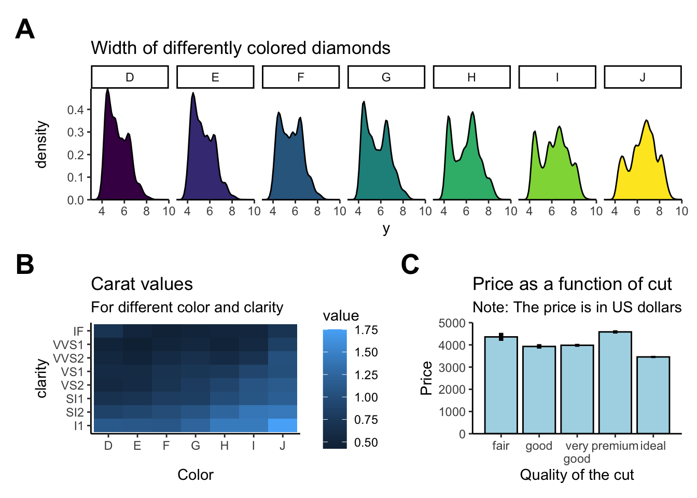
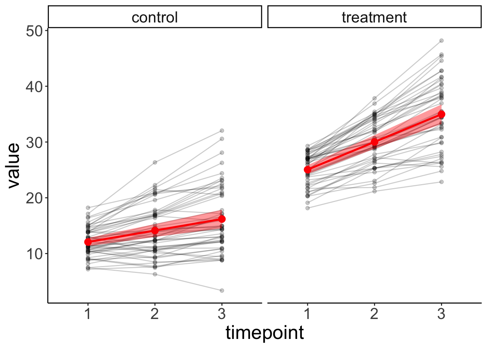
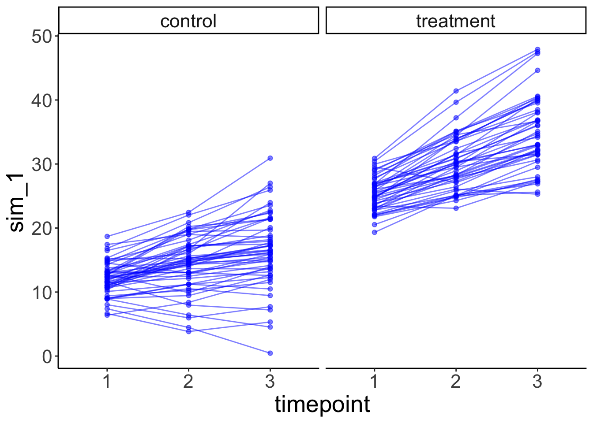
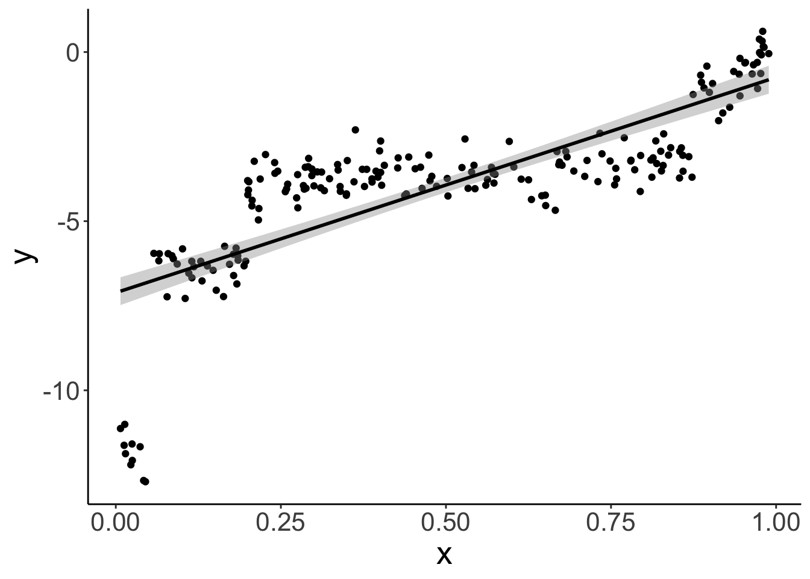
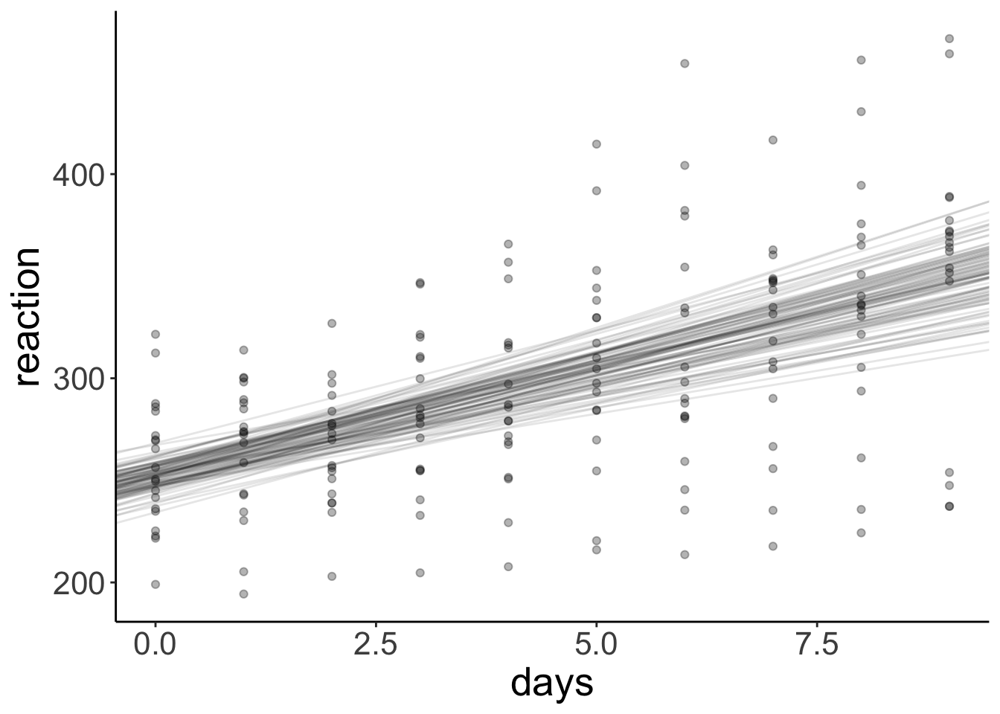

Chapter 2 Visualization 1
In this lecture, we will take a look at how to visualize data using the powerful ggplot2 package. We will use ggplot2 a lot throughout the rest of the course!
2.1 Learning goals
- Take a look at some suboptimal plots, and think about how to make them better.
- Get familiar with the RStudio interface.
- Understand the general philosophy behind
ggplot2– a grammar of graphics. - Understand the mapping from data to geoms in
ggplot2. - Create informative figures using grouping and facets.
2.2 Load packages
Let’s first load the packages that we need for this chapter. You can click on the green arrow to execute the code chunk below.
library("knitr") # for rendering the RMarkdown file
library("tidyverse") # for plotting (and many more cool things we'll discover later)
# these options here change the formatting of how comments are rendered
# in RMarkdown
opts_chunk$set(comment = "",
fig.show = "hold")The tidyverse is a collection of packages that includes ggplot2.
2.3 Why visualize data?
The greatest value of a picture is when it forces us to notice what we never expected to see. — John Tukey
There is no single statistical tool that is as powerful as a well‐chosen graph. (Chambers et al. 1983)
…make both calculations and graphs. Both sorts of output should be studied; each will contribute to understanding. (Anscombe 1973)

Figure 2.1: Anscombe’s quartet.
Anscombe’s quartet in Figure 2.1 (left side) illustrates the importance of visualizing data. Even though the datasets I-IV have the same summary statistics (mean, standard deviation, correlation), they are importantly different from each other. On the right side, we have four data sets with the same summary statistics that are very similar to each other.
](figures/correlations.png)
Figure 2.2: The Pearson’s \(r\) correlation coefficient is the same for all of these datasets. Source: Data Visualization – A practical introduction by Kieran Healy
All the datasets in Figure 2.2 share the same correlation coefficient. However, again, they are very different from each other.

Figure 2.3: The Datasaurus Dozen. While different in appearance, each dataset has the same summary statistics to two decimal places (mean, standard deviation, and Pearson’s correlation).
The data sets in Figure 2.3 all share the same summary statistics. Clearly, the data sets are not the same though.
Tip: Always plot the data first!
Here is the paper from which I took Figure 2.3. It explains how the figures were generated and shows more examples for how summary statistics and some kinds of plots are insufficient to get a good sense for what’s going on in the data.
2.4 Some basics
2.4.1 Setting up RStudio
Figure 2.4: General preferences.
Make sure that:
- Restore .RData into workspace at startup is unselected
- Save workspace to .RData on exit is set to Never
This can otherwise cause problems with reproducibility and weird behavior between R sessions because certain things may still be saved in your workspace.

Figure 2.5: Code window preferences.
Make sure that:
- Soft-wrap R source files is selected
This way you don’t have to scroll horizontally. At the same time, avoid writing long single lines of code. For example, instead of writing code like so:
ggplot(data = diamonds, mapping = aes(x = cut, y = price)) +
stat_summary(fun = "mean", geom = "bar", color = "black", fill = "lightblue", width = 0.85) +
stat_summary(fun.data = "mean_cl_boot", geom = "linerange", size = 1.5) +
labs(title = "Price as a function of quality of cut", subtitle = "Note: The price is in US dollars", tag = "A", x = "Quality of the cut", y = "Price")You may want to write it this way instead:
ggplot(data = diamonds,
mapping = aes(x = cut,
y = price)) +
# display the means
stat_summary(fun = "mean",
geom = "bar",
color = "black",
fill = "lightblue",
width = 0.85) +
# display the error bars
stat_summary(fun.data = "mean_cl_boot",
geom = "linerange",
size = 1.5) +
# change labels
labs(title = "Price as a function of quality of cut",
subtitle = "Note: The price is in US dollars", # we might want to change this later
tag = "A",
x = "Quality of the cut",
y = "Price")This makes it much easier to see what’s going on, and you can easily add comments to individual lines of code.
Tip: If a function has more than two arguments put each argument on a new line.
RStudio makes it easy to write nice code. It figures out where to put the next line of code when you press ENTER. And if things ever get messy, just select the code of interest and hit cmd + i to re-indent the code.
Here are some more resources with tips for how to write nice code in R:
Tip: Use a consistent coding style. This makes reading code and debugging much easier!
2.4.2 Getting help
There are three simple ways to get help in R. You can either put a ? in front of the function you’d like to learn more about, or use the help() function.
?print
help("print")Tip: To see the help file, hover over a function (or dataset) with the mouse (or select the text) and then press
F1.
I recommend using F1 to get to help files – it’s the fastest way!
R help files can sometimes look a little cryptic. Most R help files have the following sections (copied from here):
Title: A one-sentence overview of the function.
Description: An introduction to the high-level objectives of the function.
Usage: A description of the syntax of the function (in other words, how the function is called). This is where you find all the arguments that you can supply to the function, as well as any default values of these arguments.
Arguments: A description of each argument. Usually this includes a specification of the class (for example, character, numeric, list, and so on). This section is an important one to understand, because arguments are frequently a cause of errors in R.
Details: Extended details about how the function works, provides longer descriptions of the various ways to call the function (if applicable), and a longer discussion of the arguments.
Value: A description of the class of the value returned by the function.
See also: Links to other relevant functions. In most of the R editors, you can click these links to read the Help files for these functions.
Examples: Worked examples of real R code that you can paste into your console and run.
Here is the help file for the print() function:

Figure 2.6: Help file for the print() function.
2.4.3 R Markdown infos
An RMarkdown file has four key components:
- YAML header
- Headings to structure the document
- Text
- Code chunks
The YAML (Yet Another Markdown Language) header specifies general options such as whether you’d like to have a table of content displayed, and in what output format you want to create your report (e.g. html or pdf). Notice that the YAML header cares about indentation, so make sure to get that right!
Headings are very useful for structuring your RMarkdown file. For your reports, it’s often a good idea to have one header for each code chunk. The outline viewer here on the right is great for navigating large analysis files.
Text is self-explanatory.
Code chunks is where the coding happens. You can add one via the Insert button above, or via the shortcut cmd + option + i (the much cooler way of doing it!)
Code chunks can have code chunk options which we can set by clicking on the cog symbol on the right. You can also give code chunks a name, so that we can refer to it in text. I’ve named the one above “another-code-chunk”. Make sure to have no white space or underscore in a code chunk name.
2.4.4 Helpful keyboard shortcuts
cmd + enter: run selected codecmd + shift + enter: run code chunkcmd + i: re-indent selected codecmd + shift + c: comment/uncomment several lines of codecmd + shift + d: duplicate line underneath- set up your own shortcuts to do useful things like
- switch tabs
- jump up and down between code chunks
- …
2.5 Data visualization
We will use the ggplot2 package to visualize data. By the end of next class, you’ll be able to make a figure like this:

Figure 2.7: What a nice figure!
Now let’s figure out (pun intended!) how to get there.
2.5.1 Setting up a plot
Let’s first get some data.
df.diamonds = diamondsThe diamonds dataset comes with the ggplot2 package. We can get a description of the dataset by running the following command:
?diamondsAbove, we assigned the diamonds dataset to the variable df.diamonds so that we can see it in the data explorer.
Let’s take a look at the full dataset by clicking on it in the explorer.
Tip: You can view a data frame by highlighting the text in the editor (or simply moving the mouse above the text), and then pressing
F2.
The df.diamonds data frame contains information about almost 60,000 diamonds, including their price, carat value, size, etc. Let’s use visualization to get a better sense for this dataset.
We start by setting up the plot. To do so, we pass a data frame to the function ggplot() in the following way.
ggplot(data = df.diamonds)
This, by itself, won’t do anything yet. We also need to specify what to plot.
Let’s take a look at how much diamonds of different color cost. The help file says that diamonds labeled D have the best color, and diamonds labeled J the worst color. Let’s make a bar plot that shows the average price of diamonds for different colors.
We do so via specifying a mapping from the data to the plot aesthetics with the function aes(). We need to tell aes() what we would like to display on the x-axis, and the y-axis of the plot.
ggplot(data = df.diamonds,
mapping = aes(x = color,
y = price))
Here, we specified that we want to plot color on the x-axis, and price on the y-axis. As you can see, ggplot2 has already figured out how to label the axes. However, we still need to specify how to plot it.
2.5.2 Bar plot
Let’s make a bar graph:
ggplot(data = df.diamonds,
mapping = aes(x = color,
y = price)) +
stat_summary(fun = "mean",
geom = "bar")
Neat! Three lines of code produce an almost-publication-ready plot (to be published in the Proceedings of Unnecessary Diamonds)! Note how we used a + at the end of the first line of code to specify that there will be more. This is a very powerful idea underlying ggplot2. We can start simple and keep adding things to the plot step by step.
We used the stat_summary() function to define what we want to plot (the “mean”), and how (as a “bar” chart). Let’s take a closer look at that function.
help(stat_summary)Not the the easiest help file … We supplied two arguments to the function, fun = and geom =.
- The
funargument specifies what function we’d like to apply to the data for each value ofx. Here, we said that we would like to take themeanand we specified that as a string. - The
geom(= geometric object) argument specifies how we would like to plot the result, namely as a “bar” plot.
Instead of showing the “mean”, we could also show the “median” instead.
ggplot(data = df.diamonds,
mapping = aes(x = color,
y = price)) +
stat_summary(fun = "median",
geom = "bar")
And instead of making a bar plot, we could plot some points.
ggplot(df.diamonds,
aes(x = color,
y = price)) +
stat_summary(fun = "mean",
geom = "point")
Tip: Take a look here to see what other geoms ggplot2 supports.
Somewhat surprisingly, diamonds with the best color (D) are not the most expensive ones. What’s going on here? We’ll need to do some more exploration to figure this out.
2.5.3 Setting the default plot theme
Before moving on, let’s set a different default theme for our plots. Personally, I’m not a big fan of the gray background and the white grid lines. Also, the default size of the text should be bigger. We can change the default theme using the theme_set() function like so:
theme_set(theme_classic() + # set the theme
theme(text = element_text(size = 20))) # set the default text sizeFrom now on, all our plots will use what’s specified in theme_classic(), and the default text size will be larger, too. For any individual plot, we can still override these settings.
2.5.4 Scatter plot
I don’t know much about diamonds, but I do know that diamonds with a higher carat value tend to be more expensive. color was a discrete variable with seven different values. carat, however, is a continuous variable. We want to see how the price of diamonds differs as a function of the carat value. Since we are interested in the relationship between two continuous variables, plotting a bar graph won’t work. Instead, let’s make a scatter plot. Let’s put the carat value on the x-axis, and the price on the y-axis.
ggplot(data = df.diamonds,
mapping = aes(x = carat,
y = price)) +
geom_point()
Figure 2.8: Scatterplot.
Cool! That looks sensible. Diamonds with a higher carat value tend to have a higher price. Our dataset has 53940 rows. So the plot actually shows 53940 circles even though we can’t see all of them since they overlap.
Let’s make some progress on trying to figure out why the diamonds with the better color weren’t the most expensive ones on average. We’ll add some color to the scatter plot in Figure 2.8. We color each of the points based on the diamond’s color. To do so, we pass another argument to the aesthetics of the plot via aes().
ggplot(data = df.diamonds,
mapping = aes(x = carat,
y = price,
color = color)) +
geom_point()
Figure 2.9: Scatterplot with color.
Aha! Now we’ve got some color. Notice how in Figure 2.9 ggplot2 added a legend for us, thanks! We’ll see later how to play around with legends. Form just eye-balling the plot, it looks like the diamonds with the best color (D) tended to have a lower carat value, and the ones with the worst color (J), tended to have the highest carat values.
So this is why diamonds with better colors are less expensive – these diamonds have a lower carat value overall.
There are many other things that we can define in aes(). Take a quick look at the vignette:
vignette("ggplot2-specs")2.5.4.1 Practice plot 1
Make a scatter plot that shows the relationship between the variables depth (on the x-axis), and table (on the y-axis). Take a look at the description for the diamonds dataset so you know what these different variables mean. Your plot should look like the one shown in Figure 2.10.
# make practice plot 1 hereinclude_graphics("figures/vis1_practice_plot1.png")
Figure 2.10: Practice plot 1.
Advanced: A neat trick to get a better sense for the data here is to add transparency. Your plot should look like the one shown in Figure 2.11.
# make advanced practice plot 1 hereinclude_graphics("figures/vis1_practice_plot1a.png")
Figure 2.11: Practice plot 1.
2.5.5 Line plot
What else do we know about the diamonds? We actually know the quality of how they were cut. The cut variable ranges from “Fair” to “Ideal”. First, let’s take a look at the relationship between cut and price. This time, we’ll make a line plot instead of a bar plot (just because we can).
ggplot(data = df.diamonds,
mapping = aes(x = cut,
y = price)) +
stat_summary(fun = "mean",
geom = "line")geom_path: Each group consists of only one observation. Do you need to adjust
the group aesthetic?
Oops! All we did is that we replaced x = color with x = cut, and geom = "bar" with geom = "line". However, the plot doesn’t look like expected (i.e. there is no real plot). What happened here? The reason is that the line plot needs to know which points to connect. The error message tells us that each group consists of only one observation. Let’s adjust the group aesthetic to fix this.
ggplot(data = df.diamonds,
mapping = aes(x = cut,
y = price,
group = 1)) +
stat_summary(fun = "mean",
geom = "line")
By adding the parameter group = 1 to mapping = aes(), we specify that we would like all the levels in x = cut to be treated as coming from the same group. The reason for this is that cut (our x-axis variable) is a factor (and not a numeric variable), so, by default, ggplot2 tries to draw a separate line for each factor level. We’ll learn more about grouping below (and about factors later).
Interestingly, there is no simple relationship between the quality of the cut and the price of the diamond. In fact, “Ideal” diamonds tend to be cheapest.
2.5.6 Adding error bars
We often don’t just want to show the means but also give a sense for how much the data varies. ggplot2 has some convenient ways of specifying error bars. Let’s take a look at how much price varies as a function of clarity (another variable in our diamonds data frame).
ggplot(data = df.diamonds,
mapping = aes(x = clarity,
y = price)) +
stat_summary(fun.data = "mean_cl_boot",
geom = "pointrange")
Figure 2.12: Relationship between diamond clarity and price. Error bars indicate 95% bootstrapped confidence intervals.
Here we have it. The average price of our diamonds for different levels of clarity together with bootstrapped 95% confidence intervals. How do we know that we have 95% confidence intervals? That’s what mean_cl_boot() computes as a default. Let’s take a look at that function:
help(mean_cl_boot)Note that I had to use the fun.data = argument here instead of fun = because the mean_cl_boot() function produces three data points for each value of the x-axis (the mean, lower, and upper confidence interval).
2.5.7 Order matters
The order in which we add geoms to a ggplot matters! Generally, we want to plot error bars before the points that represent the means. To illustrate, let’s set the color in which we show the means to “red”.
ggplot(data = df.diamonds,
mapping = aes(x = clarity,
y = price)) +
stat_summary(fun.data = "mean_cl_boot",
geom = "linerange") +
stat_summary(fun = "mean",
geom = "point",
color = "red")Figure 2.13: This figure looks good. Error bars and means are drawn in the correct order.
Figure 2.13 looks good.
# I've changed the order in which the means and error bars are drawn.
ggplot(df.diamonds,
aes(x = clarity,
y = price)) +
stat_summary(fun = "mean",
geom = "point",
color = "red") +
stat_summary(fun.data = "mean_cl_boot",
geom = "linerange")Figure 2.14: This figure looks bad. Error bars and means are drawn in the incorrect order.
Figure 2.14 doesn’t look good. The error bars are on top of the points that represent the means.
One cool feature about using stat_summary() is that we did not have to change anything about the data frame that we used to make the plots. We directly used our raw data instead of having to make separate data frames that contain the relevant information (such as the means and the confidence intervals).
You may not remember exactly what confidence intervals actually are. Don’t worry! We’ll have a recap later in class.
Let’s take a look at two more principles for plotting data that are extremely helpful: groups and facets. But before, another practice plot.
2.5.7.1 Practice plot 2
Make a bar plot that shows the average price of diamonds (on the y-axis) as a function of their clarity (on the x-axis). Also add error bars. Your plot should look like the one shown in Figure 2.15.
# make practice plot 2 hereinclude_graphics("figures/vis1_practice_plot2.png")
Figure 2.15: Practice plot 2.
Advanced: Try to make the plot shown in Figure 2.16.
# make advanced practice plot 2 hereinclude_graphics("figures/vis1_practice_plot2a.png")
Figure 2.16: Practice plot 2.
2.5.8 Grouping data
Grouping in ggplot2 is a very powerful idea. It allows us to plot subsets of the data – again without the need to make separate data frames first.
Let’s make a plot that shows the relationship between price and color separately for the different qualities of cut.
ggplot(data = df.diamonds,
mapping = aes(x = color,
y = price,
group = cut)) +
stat_summary(fun = "mean",
geom = "line")
Well, we got some separate lines here but we don’t know which line corresponds to which cut. Let’s add some color!
ggplot(data = df.diamonds,
mapping = aes(x = color,
y = price,
group = cut,
color = cut)) +
stat_summary(fun = "mean",
geom = "line",
size = 2)
Nice! In addition to adding color, I’ve made the lines a little thicker here by setting the size argument to 2.
Grouping is very useful for bar plots. Let’s take a look at how the average price of diamonds looks like taking into account both cut and color (I know – exciting times!). Let’s put the color on the x-axis and then group by the cut.
ggplot(data = df.diamonds,
mapping = aes(x = color,
y = price,
group = cut,
color = cut)) +
stat_summary(fun = "mean",
geom = "bar")
That’s a fail! Several things went wrong here. All the bars are gray and only their outline is colored differently. Instead we want the bars to have a different color. For that we need to specify the fill argument rather than the color argument! But things are worse. The bars currently are shown on top of each other. Instead, we’d like to put them next to each other. Here is how we can do that:
ggplot(data = df.diamonds,
mapping = aes(x = color,
y = price,
group = cut,
fill = cut)) +
stat_summary(fun = "mean",
geom = "bar",
position = position_dodge())
Neato! We’ve changed the color argument to fill, and have added the position = position_dodge() argument to the stat_summary() call. This argument makes it such that the bars are nicely dodged next to each other. Let’s add some error bars just for kicks.
ggplot(data = df.diamonds,
mapping = aes(x = color,
y = price,
group = cut,
fill = cut)) +
stat_summary(fun = "mean",
geom = "bar",
position = position_dodge(width = 0.9),
color = "black") +
stat_summary(fun.data = "mean_cl_boot",
geom = "linerange",
position = position_dodge(width = 0.9))
Voila! Now with error bars. Note that we’ve added the width = 0.9 argument to position_dodge(). Somehow R was complaining when this was not defined for geom “linerange”. I’ve also added some outline to the bars by including the argument color = "black". I think it looks nicer this way.
So, still somewhat surprisingly, diamonds with the worst color (J) are more expensive than dimanods with the best color (D), and diamonds with better cuts are not necessarily more expensive.
2.5.8.1 Practice plot 3
Recreate the plot shown in Figure 2.17.
# make practice plot 3 hereinclude_graphics("figures/vis1_practice_plot3.png")
Figure 2.17: Practice plot 3.
Advanced: Try to recreate the plot show in in Figure 2.18.
# make advanced practice plot 3 hereinclude_graphics("figures/vis1_practice_plot3a.png")
Figure 2.18: Practice plot 3.
2.5.9 Making facets
Having too much information in a single plot can be overwhelming. The previous plot is already pretty busy. Facets are a nice way of splitting up plots and showing information in separate panels.
Let’s take a look at how wide these diamonds tend to be. The width in mm is given in the y column of the diamonds data frame. We’ll make a histogram first. To make a histogram, the only aesthetic we needed to specify is x.
ggplot(data = df.diamonds,
mapping = aes(x = y)) +
geom_histogram()`stat_bin()` using `bins = 30`. Pick better value with `binwidth`.
That looks bad! Let’s pick a different value for the width of the bins in the histogram.
ggplot(data = df.diamonds,
mapping = aes(x = y)) +
geom_histogram(binwidth = 0.1)
Still bad. There seems to be an outlier diamond that happens to be almost 60 mm wide, while most of the rest is much narrower. One option would be to remove the outlier from the data before plotting it. But generally, we don’t want to make new data frames. Instead, let’s just limit what data we show in the plot.
ggplot(data = df.diamonds,
mapping = aes(x = y)) +
geom_histogram(binwidth = 0.1) +
coord_cartesian(xlim = c(3, 10))
I’ve used the coord_cartesian() function to restrict the range of data to show by passing a minimum and maximum to the xlim argument. This looks better now.
Instead of histograms, we can also plot a density fitted to the distribution.
ggplot(data = df.diamonds,
mapping = aes(x = y)) +
geom_density() +
coord_cartesian(xlim = c(3, 10))
Looks pretty similar to our histogram above! Just like we can play around with the binwidth of the histogram, we can change the smoothing bandwidth of the kernel that is used to create the histogram. Here is a histogram with a much wider bandwidth:
ggplot(data = df.diamonds,
mapping = aes(x = y)) +
geom_density(bw = 0.5) +
coord_cartesian(xlim = c(3, 10))We’ll learn more about how these densities are determined later in class.
I promised that this section was about making facets, right? We’re getting there! Let’s first take a look at how wide diamonds of different color are. We can use grouping to make this happen.
ggplot(data = df.diamonds,
mapping = aes(x = y,
group = color,
fill = color)) +
geom_density(bw = 0.2,
alpha = 0.2) +
coord_cartesian(xlim = c(3, 10))OK! That’s a little tricky to tell apart. Notice that I’ve specified the alpha argument in the geom_density() function so that the densities in the front don’t completely hide the densities in the back. But this plot still looks too busy. Instead of grouping, let’s put the densities for the different colors, in separate panels. That’s what facetting allows you to do.
ggplot(data = df.diamonds,
mapping = aes(x = y,
fill = color)) +
geom_density(bw = 0.2) +
facet_grid(cols = vars(color)) +
coord_cartesian(xlim = c(3, 10))
Now we have the densities next to each other in separate panels. I’ve removed the alpha argument since the densities aren’t overlapping anymore. To make the different panels, I used the facet_grid() function and specified that I want separate columns for the different colors (cols = vars(color)). What’s the deal with vars()? Why couldn’t we just write facet_grid(cols = color) instead? The short answer is: that’s what the function wants. The long answer is: long. (We’ll learn more about this later in the course.)
To show the facets in different rows instead of columns we simply replace cols = vars(color) with rows = vars(color).
ggplot(data = df.diamonds,
mapping = aes(x = y,
fill = color)) +
geom_density(bw = 0.2) +
facet_grid(rows = vars(color)) +
coord_cartesian(xlim = c(3, 10))
Several aspects about this plot should be improved:
- the y-axis text is overlapping
- having both a legend and separate facet labels is redundant
- having separate fills is not really necessary here
So, what does this plot actually show us? Well, J-colored diamonds tend to be wider than D-colored diamonds. Fascinating!
Of course, we could go completely overboard with facets and groups. So let’s do it! Let’s look at how the average price (somewhat more interesting) varies as a function of color, cut, and clarity. We’ll put color on the x-axis, and make separate rows for cut and columns for clarity.
ggplot(data = df.diamonds,
mapping = aes(y = price,
x = color,
fill = color)) +
stat_summary(fun = "mean",
geom = "bar",
color = "black") +
stat_summary(fun.data = "mean_cl_boot",
geom = "linerange") +
facet_grid(rows = vars(cut),
cols = vars(clarity))Warning: Removed 1 rows containing missing values (geom_segment).Warning: Removed 3 rows containing missing values (geom_segment).Warning: Removed 1 rows containing missing values (geom_segment).
Figure 2.19: A figure that is stretching it in terms of information.
Figure 2.19 is stretching it in terms of how much information it presents. But it gives you a sense for how to combine the different bits and pieces we’ve learned so far.
2.5.9.1 Practice plot 4
Recreate the plot shown in Figure 2.20.
# make practice plot 4 hereinclude_graphics("figures/vis1_practice_plot4.png")
Figure 2.20: Practice plot 4.
2.5.10 Global, local, and setting aes()
ggplot2 allows you to specify the plot aesthetics in different ways.
ggplot(data = df.diamonds,
mapping = aes(x = carat,
y = price,
color = color)) +
geom_point() +
geom_smooth(method = "lm",
se = F)`geom_smooth()` using formula 'y ~ x'
Here, I’ve drawn a scatter plot of the relationship between carat and price, and I have added the best-fitting regression lines via the geom_smooth(method = "lm") call. (We will learn more about what these regression lines mean later in class.)
Because I have defined all the aesthetics at the top level (i.e. directly within the ggplot() function), the aesthetics apply to all the functions afterwards. Aesthetics defined in the ggplot() call are global. In this case, the geom_point() and the geom_smooth() functions. The geom_smooth() function produces separate best-fit regression lines for each different color.
But what if we only wanted to show one regression line instead that applies to all the data? Here is one way of doing so:
ggplot(data = df.diamonds,
mapping = aes(x = carat,
y = price)) +
geom_point(mapping = aes(color = color)) +
geom_smooth(method = "lm")`geom_smooth()` using formula 'y ~ x'
Here, I’ve moved the color aesthetic into the geom_point() function call. Now, the x and y aesthetics still apply to both the geom_point() and the geom_smooth() function call (they are global), but the color aesthetic applies only to geom_point() (it is local). Alternatively, we can simply overwrite global aesthetics within local function calls.
ggplot(data = df.diamonds,
mapping = aes(x = carat,
y = price,
color = color)) +
geom_point() +
geom_smooth(method = "lm",
color = "black")`geom_smooth()` using formula 'y ~ x'
Here, I’ve set color = "black" within the geom_smooth() function, and now only one overall regression line is displayed since the global color aesthetic was overwritten in the local function call.
2.6 Additional resources
2.6.1 Cheatsheets
- RStudio IDE –> information about RStudio
- RMarkdown –> information about writing in RMarkdown
- RMarkdown reference –> RMarkdown reference sheet
- Data visualization –> general principles of effective graphic design
- ggplot2 –> specific information about ggplot
2.6.3 Books and chapters
- R graphics cookbook –> quick intro to the the most common graphs
- ggplot2 book
- R for Data Science book
- Data Visualization – A practical introduction (by Kieran Healy)
- Fundamentals of Data Visualization –> very nice resource that goes beyond basic functionality of
ggplotand focuses on how to make good figures (e.g. how to choose colors, axes, …)
2.6.4 Misc
- nice online ggplot tutorial
- how to read R help files
- ggplot2 extensions –> gallery of ggplot2 extension packages
- ggplot2 visualizations with code –> gallery of plots with code
2.7 Session info
R version 4.1.2 (2021-11-01)
Platform: x86_64-apple-darwin17.0 (64-bit)
Running under: macOS Big Sur 10.16
Matrix products: default
BLAS: /Library/Frameworks/R.framework/Versions/4.1/Resources/lib/libRblas.0.dylib
LAPACK: /Library/Frameworks/R.framework/Versions/4.1/Resources/lib/libRlapack.dylib
locale:
[1] en_US.UTF-8/en_US.UTF-8/en_US.UTF-8/C/en_US.UTF-8/en_US.UTF-8
attached base packages:
[1] stats graphics grDevices utils datasets methods base
other attached packages:
[1] forcats_0.5.1 stringr_1.4.0 dplyr_1.0.9 purrr_0.3.4
[5] readr_2.1.2 tidyr_1.2.0 tibble_3.1.7 ggplot2_3.3.6
[9] tidyverse_1.3.1 knitr_1.39
loaded via a namespace (and not attached):
[1] nlme_3.1-157 fs_1.5.2 lubridate_1.8.0
[4] RColorBrewer_1.1-3 httr_1.4.3 tools_4.1.2
[7] backports_1.4.1 bslib_0.3.1 utf8_1.2.2
[10] R6_2.5.1 rpart_4.1.16 Hmisc_4.7-0
[13] DBI_1.1.2 mgcv_1.8-40 colorspace_2.0-3
[16] nnet_7.3-17 withr_2.5.0 tidyselect_1.1.2
[19] gridExtra_2.3 compiler_4.1.2 cli_3.3.0
[22] rvest_1.0.2 htmlTable_2.4.0 xml2_1.3.3
[25] labeling_0.4.2 bookdown_0.26 sass_0.4.1
[28] scales_1.2.0 checkmate_2.1.0 digest_0.6.29
[31] foreign_0.8-82 rmarkdown_2.14 base64enc_0.1-3
[34] jpeg_0.1-9 pkgconfig_2.0.3 htmltools_0.5.2
[37] dbplyr_2.1.1 fastmap_1.1.0 highr_0.9
[40] htmlwidgets_1.5.4 rlang_1.0.2 readxl_1.4.0
[43] rstudioapi_0.13 jquerylib_0.1.4 farver_2.1.0
[46] generics_0.1.2 jsonlite_1.8.0 magrittr_2.0.3
[49] Formula_1.2-4 Matrix_1.4-1 munsell_0.5.0
[52] fansi_1.0.3 lifecycle_1.0.1 stringi_1.7.6
[55] yaml_2.3.5 grid_4.1.2 crayon_1.5.1
[58] lattice_0.20-45 haven_2.5.0 splines_4.1.2
[61] hms_1.1.1 pillar_1.7.0 reprex_2.0.1
[64] glue_1.6.2 evaluate_0.15 latticeExtra_0.6-29
[67] data.table_1.14.2 modelr_0.1.8 png_0.1-7
[70] vctrs_0.4.1 tzdb_0.3.0 cellranger_1.1.0
[73] gtable_0.3.0 assertthat_0.2.1 xfun_0.30
[76] broom_0.8.0 survival_3.3-1 viridisLite_0.4.0
[79] cluster_2.1.3 ellipsis_0.3.2 ).](figures/reproducibility_court.jpg)
Figure 2.21: Defense at the reproducibility court (graphic by Allison Horst).